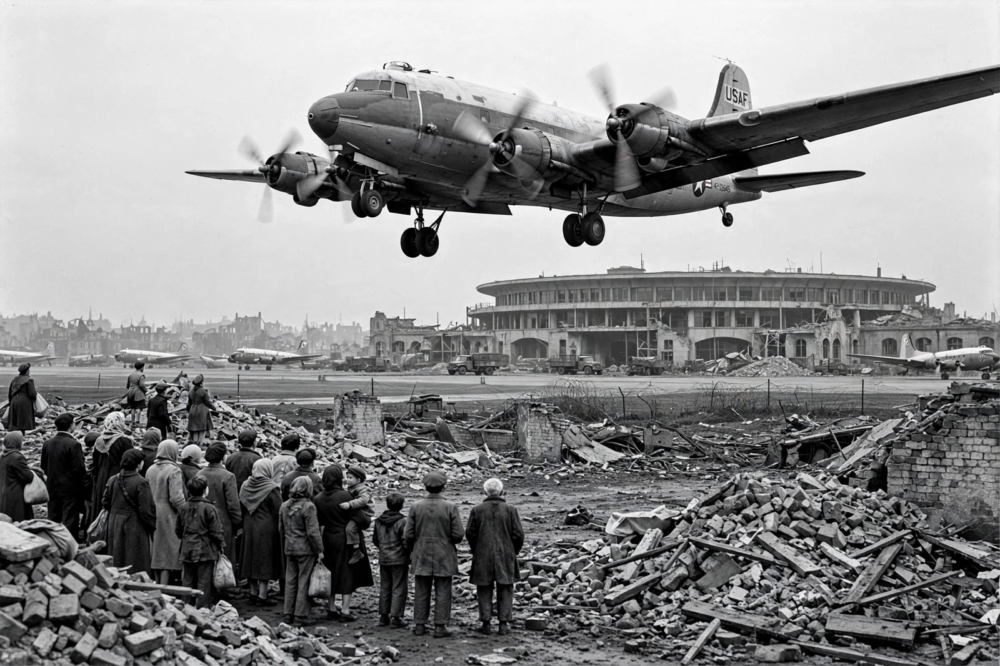

From Wikipedia, the free encyclopedia
| Berlin Blockade | |
| Date | 24 June 1948 – 12 May 1949 |
|---|---|
| Location | Berlin, Allied-occupied Germany |
| Parties | Soviet Union vs. United States, United Kingdom, France |
| Outcome | Blockade lifted; formal division of Germany into two states (1949) |
The Berlin Blockade (24 June 1948 – 12 May 1949) was one of the first major international crises of the Cold War. The Soviet Union blocked the Western Allies' railway, road, and canal access to the sectors of Berlin under Western control, in reaction to currency reform and moves towards a separate West German state. The Western Allies responded with the Berlin Airlift, supplying West Berlin's more than two million inhabitants by air for nearly a year.

Organised initially by US General Lucius D. Clay and flown largely by the US Air Force and Royal Air Force, the airlift delivered food, coal, and other supplies on a continuous schedule — at its peak, 8,893 tons in a single day (the "Easter Parade" of April 1949), with aircraft landing at Tempelhof, Gatow, and the newly built Tegel airfield at intervals of a few minutes. Pilots such as Gail Halvorsen, the "Candy Bomber," dropped small parachutes of sweets for Berlin children. In total, some 278,000 flights carried about 2.3 million tons of supplies.
Realising the blockade had failed and had hardened Western resolve, the Soviet Union lifted it on 12 May 1949. The crisis accelerated the division of Germany: the Federal Republic of Germany (West Germany) and the German Democratic Republic (East Germany) were both founded in 1949, and the Western Allies consolidated their alliance with the creation of NATO that April.
See also: Comecon · Cold War · Marshall Plan · Mikhail Gorbachev